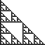
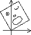
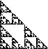
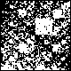

| A. The geometric characterization of the simplest fractals is
self-similarity: the shape is made of smaller
copies of itself. The copies are similar to the whole: same shape but different size. |
 |
| B. More examples of
self-similarity examples, and variations including nonlinear self-similarity,
self-affinity, and statistical self-similarity. Also, some fractal forgeries of nature. |
 |
| C. Initiators and Generators is
the simplest method for producing fractals. It is also the oldest, dating back 5000
years to south India. |
 |
| D. Geometry of plane transformations
is the mechanics of transformations that produce more general fractals by Iterated
Function Systems. |
 |
| E. An elegant application of plane transformations to growing fractals is
Iterated function systems. This method has been used in
image compression. |
|
| F. Inverse problems finding the
transformations to produce a given fractal. This is a geometrical version of
Johnny Carson's "Karnak the Magnificent" routine. |
 |
| G. Random algorithm is another way to
render fractal images. Use the same transformations as with any other IFS, but apply
them to a single point, one at a time, in random order. What happens if we depart from
randomness? See the next section. |
 |
| H. Driven IFS a variation on the Random
Algorithm to test for patterns in data. We investigate patterns in mathematical sequences,
DNA sequences, financial data, and texts. |
 |
| I. Fractals in architecture African,
Indian, and European. Repetition across several scales is a theme common to many cultures,
developed independently so far as we can tell. |
 |
| Finally, fractals seem to be a an easy concept for kids. |
|